This tutorial will guide the user through an entire mortality forecasting process using LCFIT. We will cover the combined sex ("simple") forecasting method, in which only a single population is forecasted; the other forecast interactions are organized similarly.
The tutorial goes as follows:
Each of these high-level steps will be broken down into smaller steps below, with screen shots and examples. To zoom in on image, click it. To jump forward to a section, click on one of the section descriptions listed above. To jump back to the list of sections, click on the heading.
The landing for LCFIT is a simple text-based webpage, with a description of the software, some notes, links to papers and Prof. Ron Lee's website. Perhaps most importantly, though, it has a link for registration and a link for logging in. See the links pointed by arrows in the image below.
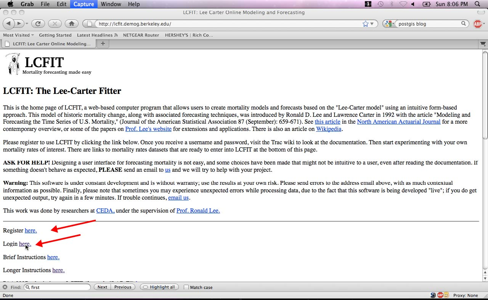If you are not a registered user, click on the registration link, and you will see the screen below. Fill it out and submit. Note that it will take a few days to register you as we review registrations by hand; we will send a registration confirmation by email. If you don't receive any notice in a few days, PLEASE CHECK YOUR SPAM FOLDER and email lcfit@demog.berkeley.edu.
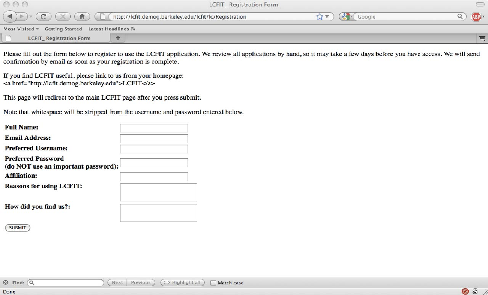If you fill out some fields incorrectly or leave them blank, you will get an error message like the following. Just press press your browser's back button and fill them out correctly, after reading the error message to make sure you see what needs to be fixed.
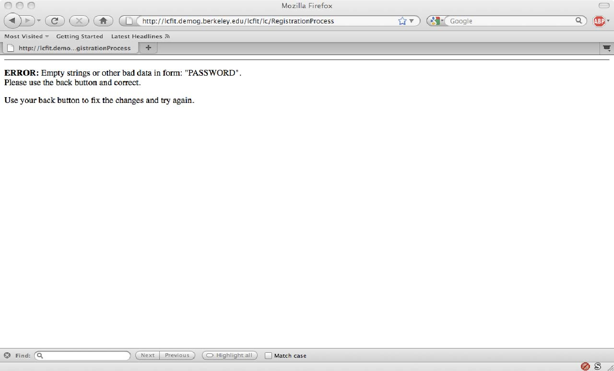If you try to register with a name that is already in use, you will get an error like the screen below. Use your back button and change the "Preferred Username" field with a different username.
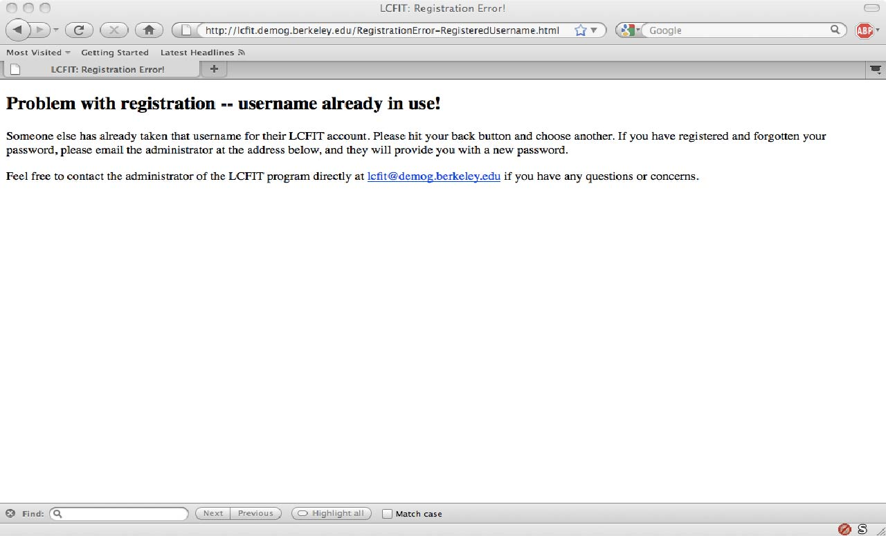File format: LCFIT uses data stored in "year by age" format. Each new year corresponds to a new row, and each age category corresponds to a new column.
Age widths: LCFIT assumes that age specific mortality rates are stored in "abridged format", with the first age width corresponding to newborns through their first year, then one year olds through their fourth year, then five year age widths after that. Finally, the "open interval" is the last age for which rates are specified, and begins at the given age but extends indefinitely; the open interval must always be more than the value in "select age for extension".
Comment syntax: Any text which follows a hash mark ("#") is ignored by the application until the end of the line. If a hash mark begins the line, the entire row is ignored. Comments can be put anywhere in the data and serve to remind the analyst information about the dataset.
Reformatting Data from Excel? Using Excel, click "Save As", then "Tab delimited text" to store your data in LCFIT format. We would recommend opening the resulting file in a text editor like Notepad or Emacs to confirm that the resulting file is correctly formatted.
Other formats? LCFIT will not accept data stored in formats other than tab delimited text, abridged ages, year by age. Sorry.
Example data: Take a look at example Swedish data here. The third row holds the first year's worth of data, the fourth row is the second year's worth of data, etc. The first column holds the mortality rates for age 0-1 (0.017949 in the file), the second column is for age 1-4 (0.001095), etc. In data files, rows which are set off by hash marks are not mortality rates, but comments and are ignored by LCFIT.
Transferring data: Data is transferred into LCFIT via pasting. Once you have formatted your data correctly, copy it to the clipboard. Then open an LCFIT session and paste it in following the directions below.
First, login by clicking at the "login" link ...
... and typing your username and password in the obvious places, and then pressing submit.
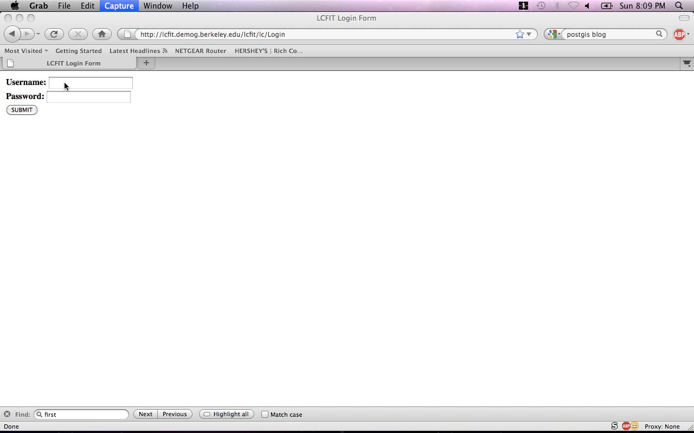You will land at the LCFIT base page. On left sidebar you see a bunch of options. Click on "Create a new single-sex LC forecast" (see arrow).
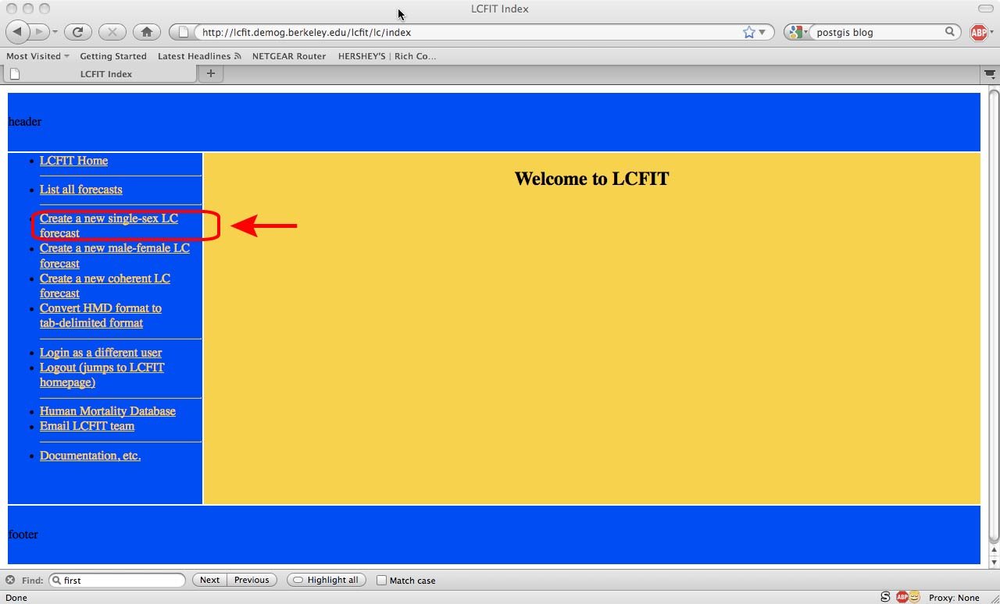Then you will get an entry form, like the following (shown with data already entered). The three boxes circled or squared in red need to be filled in. The big square box ("#1") will take the rates you have copied to the clipboard, the small box ("#2") takes the starting year of the data, and the other small box ("#3") takes a comment used to identify the forecast later. You must fill out all these boxes or the forecast won't be processed.
If you have problems running a model, it might be due to your data format -- read the section on data formats above and make sure your data is correctly structured, and email the LCFIT team if you continue to have problems. Note also that correctly formatted data may look funny because your browser "wraps" the lines when they are too long; don't worry, as long as your browser doesn't insert carriage returns (they rarely do), your model will be OK.
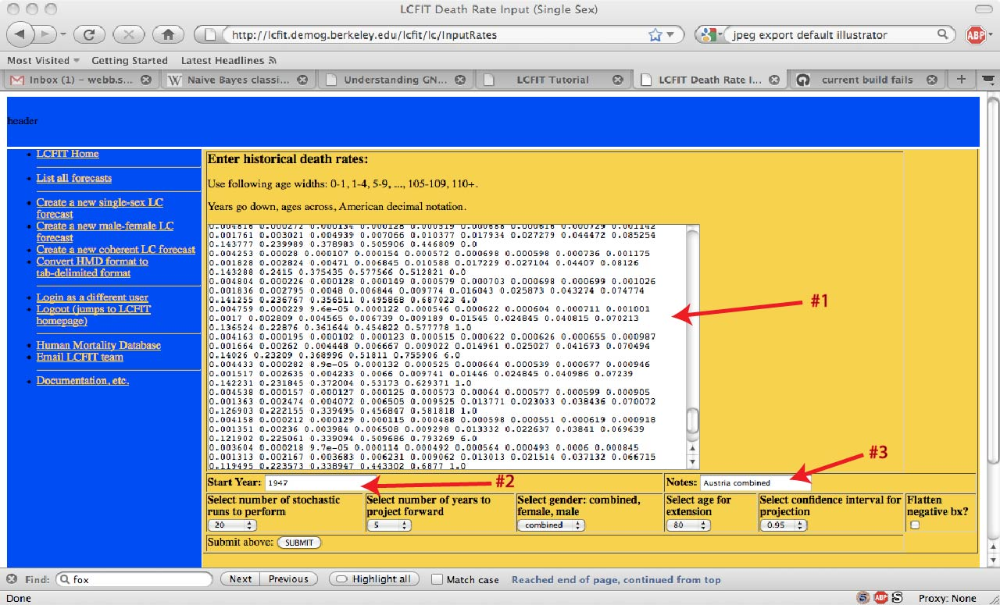There are a couple of other controls in this input screen (we suggest not using them until you are comfortable with LCFIT, though):
Once everything is filled out, press "Submit", and you will get a listing of LCFIT objects with the latest forecast run at the top (circled). The ID of that entry is clickable, pointed to by the arrow in the following screenshot.
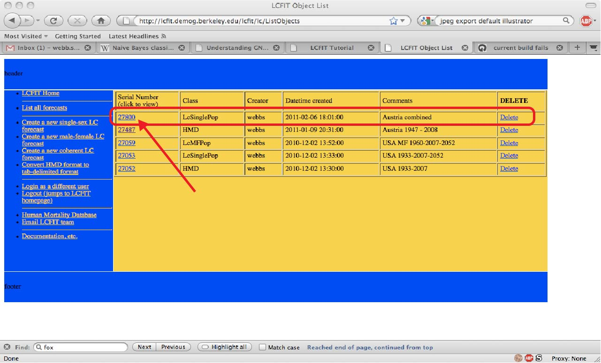Click on the ID, and you will see the screen that has the results of the forecast run. The following three screenshots are pieces of the result (imagine you are scrolling down, viewing each piece at a time).
The first screenshot has basic information about the forecast like the time executed (arrow #1). It also has graphs of the results of the LC decomposition (#2), the traces of the stochastic simulation (#3), the logarithm of select sample mortality rates over time (#4), and a profile of age-specific mortality at the first sample point, the last sample point, and the end of the forecast period (#5). Finally, the "object dump" (#6) button allows one to download a spreadsheet readable text file of ALL the input parameters, export values, and intermediate calculations of the forecast.
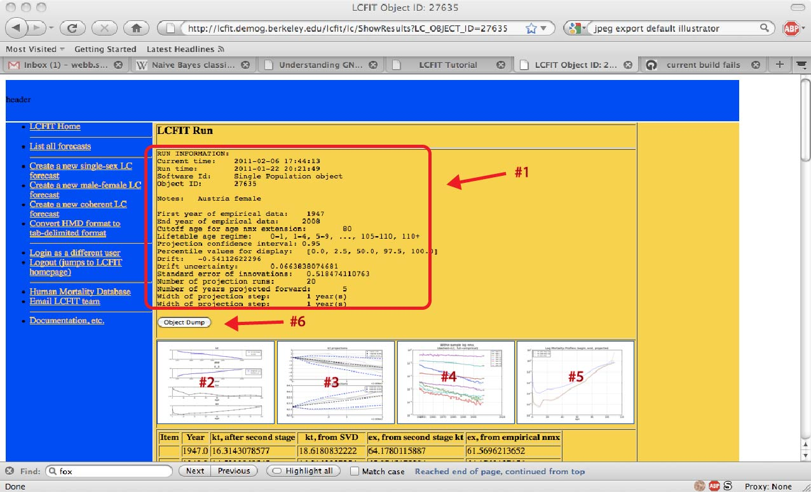The next section of the output has modeled data from the empirical LCFIT data.
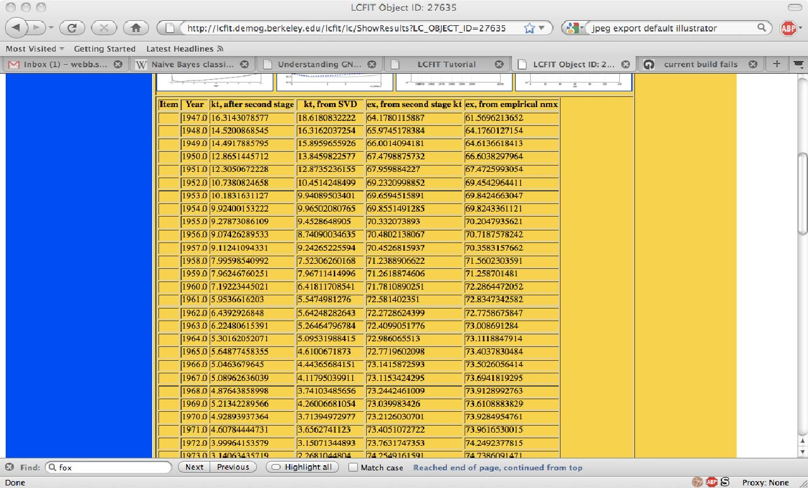The third and final screenshot has more modeled components from LCFIT.
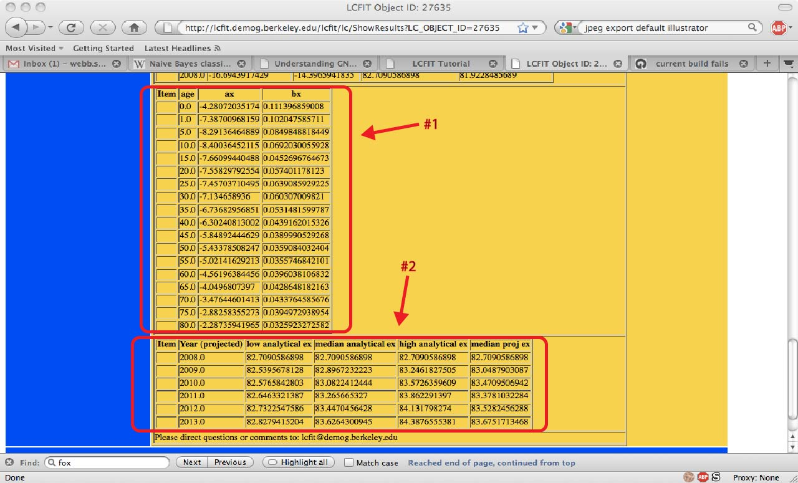If something goes really wrong, you might get the following screen. If so, please email the LCFIT administrator.
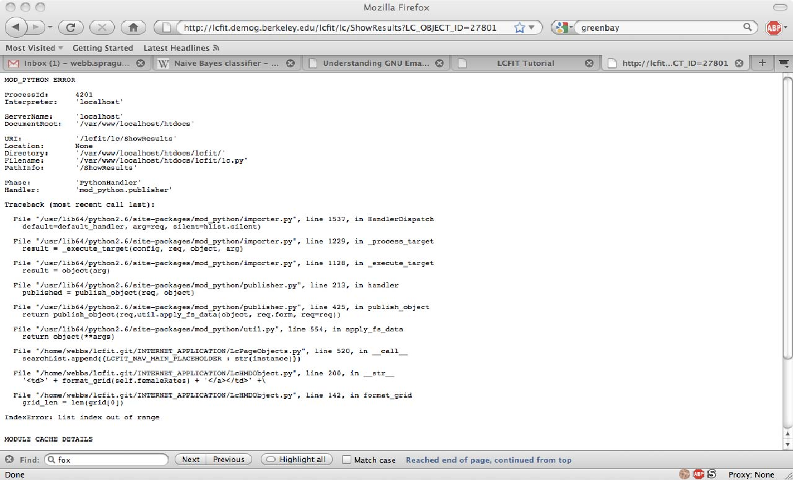It is convenient to use the Human Mortality Database for examples of mortality rates, but these datasets are not formatted in the way they need to be for LCFIT. Luckily, the authors of LCFIT have provided a tool for converting HMD data into "Year by Age" format.
The home page of HMD looks like the following. Click on Austria after logging in (circled in red).
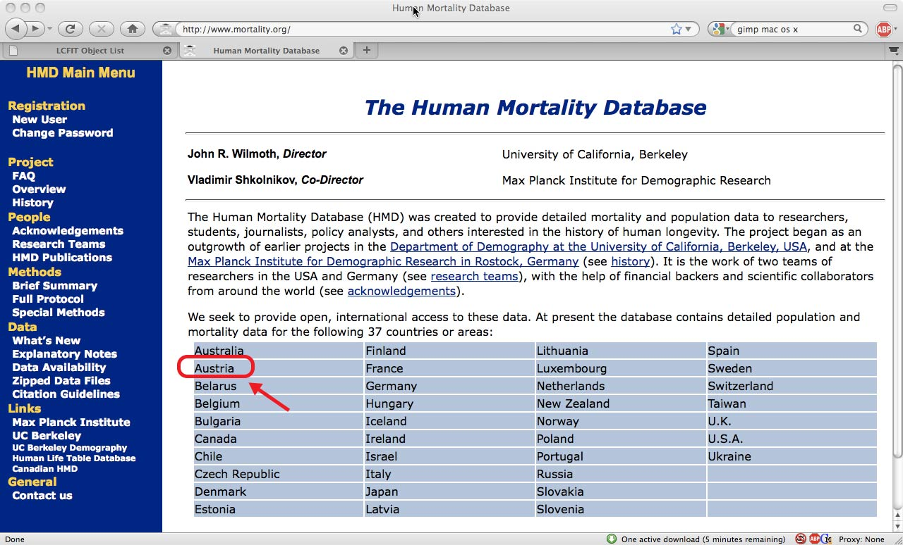Then you get a page like the following. Click on 5x1 mortality rates (circled in red).
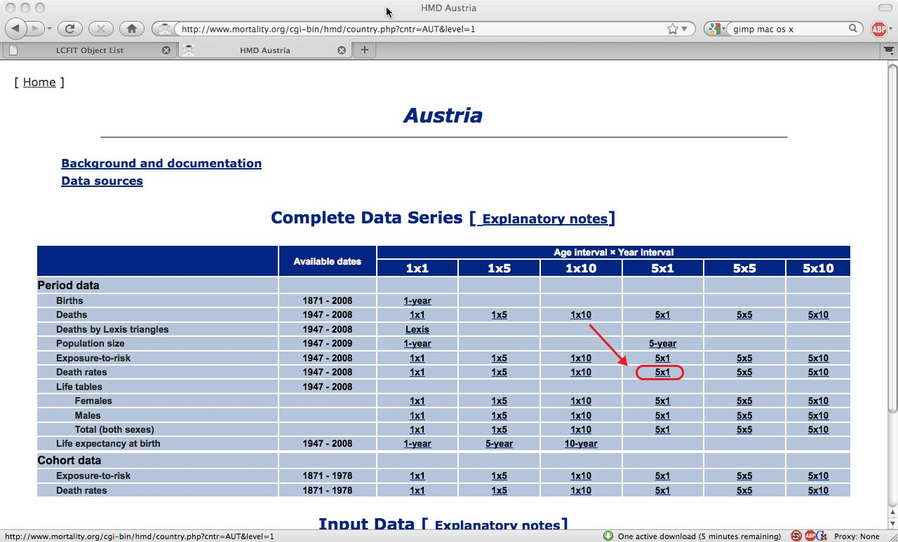Then you get mortality rate data for Austria, which looks like the following. Select the entire page (Ctrl-A in most browsers) and copy it to the clipboard.
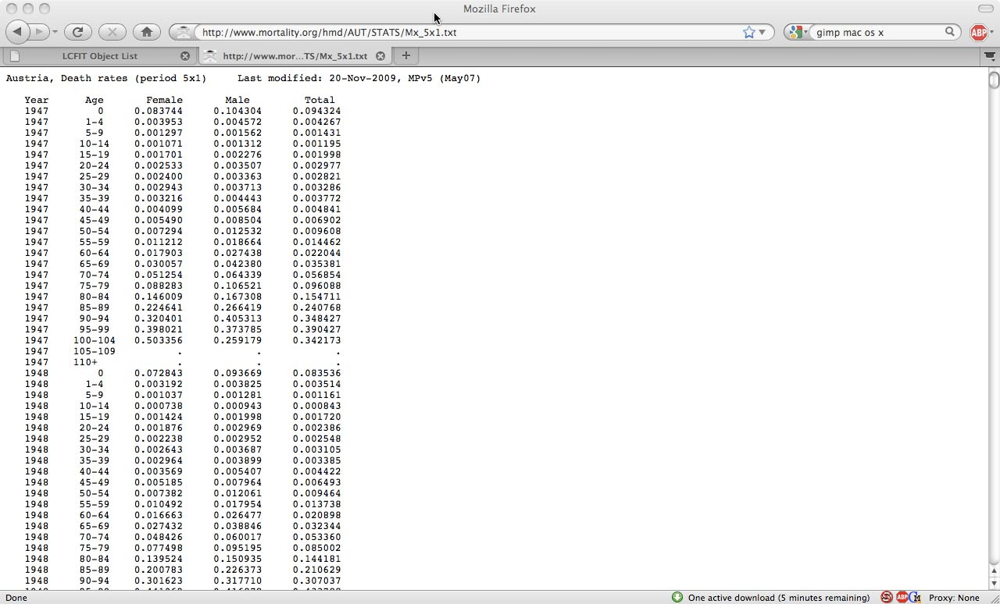Choose the tool to convert HMD data in the sidebar.
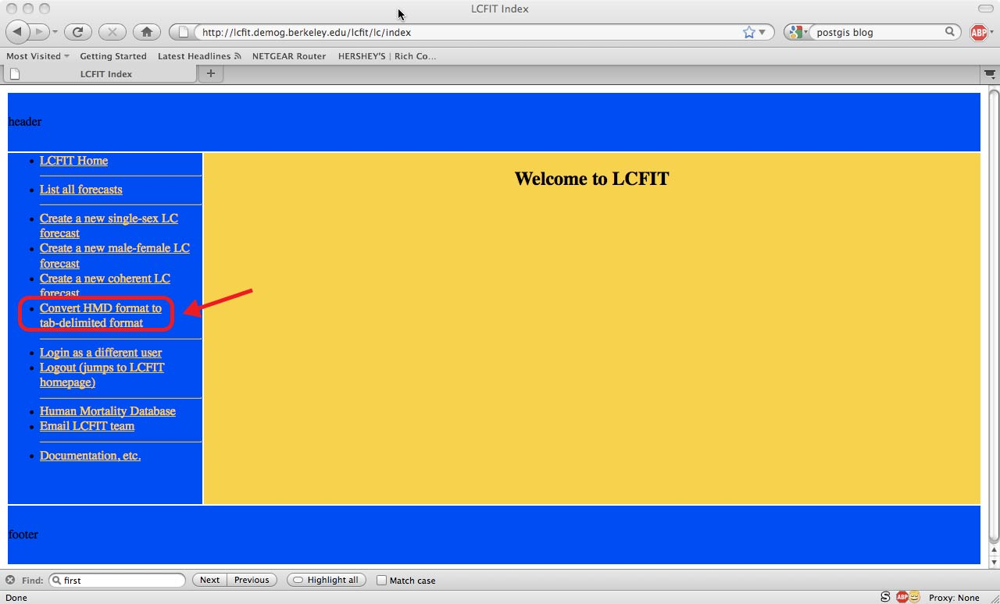You will get the following.
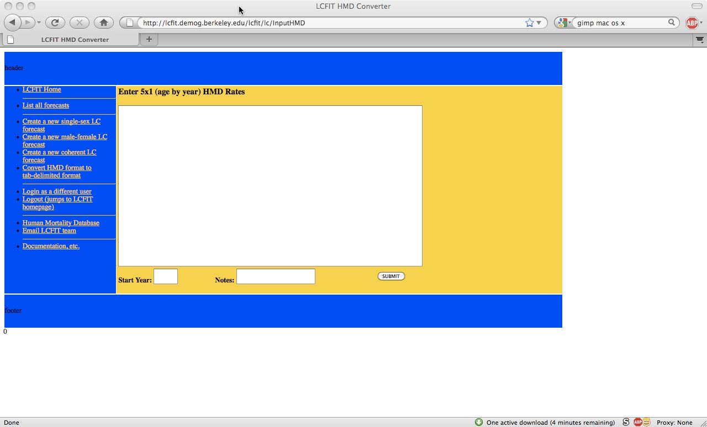Put the HMD data you cut and pasted into the form so that it looks like the following. Fill in the appropriate start year and a description in the available text boxes. Press submit.
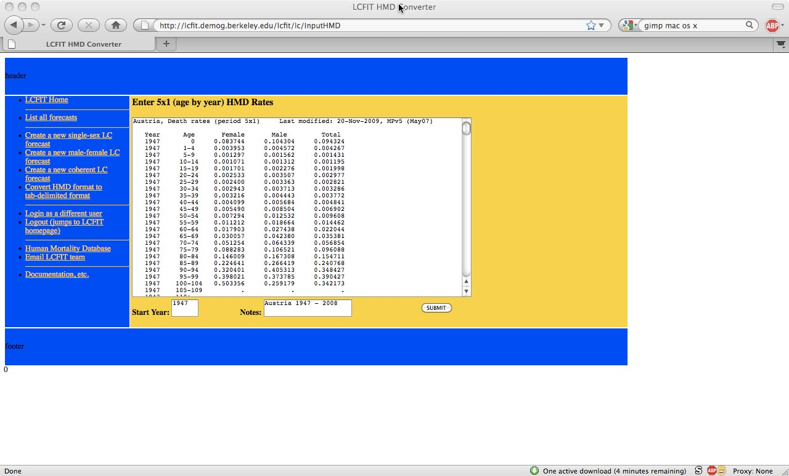You will see a list of new LCFIT objects, most recently created at the top (like a stack of plates in a cafeteria). Chose (by clicking) the HMD Object on top (circled in red).
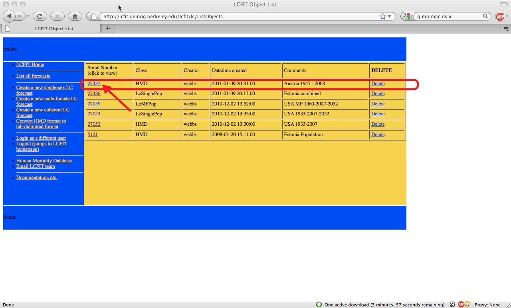You will then see a result with year-by-age data for Austria -- scroll around this page to get an idea of what is here. There are three sections to this table -- female mortality rates, male mortality rates, and combined mortality rates; by clicking one of the circled links, one jumps to section of the table with that sex. One can cut and paste the results for later entry into the LCFIT screen -- start in the upper left hand corner of a given sex and highlight to the bottom left hand corner (the arrow points to where you would start if you wanted to highlight female mortality rates).
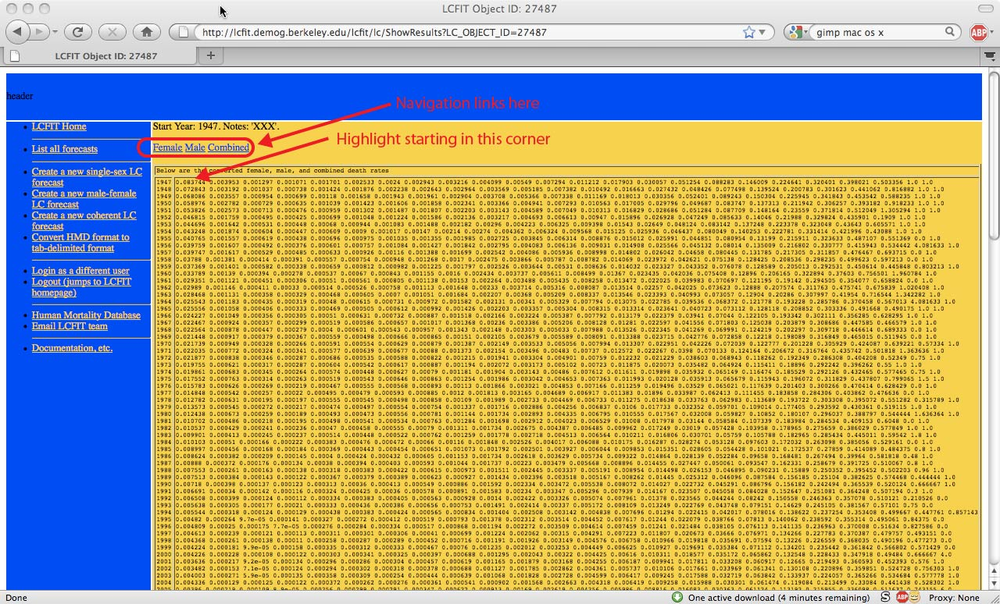We hope this tutorial has been useful. If you have questions or suggestions, please email the LCFIT administrator.